Борец вольного стиля весом 74 килограмма способен поднять и бросить через себя человека собственного веса за доли секунды. Его тело — машина из стальных связок, взрывной мускулатуры и десятилетий тренировок. Чемпион мира по борьбе — один из самых функционально сильных людей на планете. Он проводит на ковре шесть минут, которые по интенсивности сопоставимы с десятикилометровым забегом с рюкзаком. Его пульс в схватке достигает 190 ударов в минуту.
А теперь посмотрите, как он выглядит.
Тонкий обтягивающий комбинезон — singlet — превращает элитного атлета в фигуру, вызывающую скорее неловкость, чем трепет. Трико обнажает всё, что зритель не просил видеть, и при этом не подчёркивает ничего из того, что делает борца устрашающим. Ни ширину спины, ни рельеф плеч, ни мощь ног.
Это не статья-жалоба. Это проект. Мы разберём, почему форма борцов стала такой, какие ограничения нельзя нарушить, и предложим шесть концептов, прошедших через пары дизайнер-критик — каждый спорил, пока форма не стала достойной человека, который в ней выступает.
Проблема: борьба проигрывает борьбу за зрителя
Парадокс восприятия
Боксёр выходит на ринг в атласных шортах до колена с широким поясом, часто — в именном халате. Силуэт чёткий, узнаваемый, театральный. Шорты скрывают бёдра и подчёркивают торс.
Боец UFC носит шорты свободного кроя с агрессивным дизайном. Верхняя часть тела открыта — зритель видит мышцы, татуировки, шрамы. Всё создаёт нарратив бойца.
А борец? Борец выходит в том, что визуально неотличимо от купальника.


Одноцветное трико, которое в лучшем случае имеет пару полосок. Даже олимпийский чемпион в этом наряде выглядит как участник школьных соревнований. А выпирающая паховая область окончательно превращает серьёзного атлета в объект неловких мемов.
Между 2011 и 2016 годами количество борцов в старших школах США упало на 7,9%. Одна из причин — молодые атлеты стесняются надевать singlet. Тренер Дэнни Стак: «Мы вербуем 118-килограммовых футболистов для борьбы, и они надевают трико в первый раз... и не хотят продолжать.»
Международная федерация борьбы (UWW) это понимает. Поэтому уже вводились изменения: обязательные разные цвета для соперников, эксперименты с дизайном. Но всё оставалось косметическим — меняли узор на трико, не меняя сам подход.
Как мы дошли до лосин с флагами
Обнажённые греки и идеал калокагатии
В 708 году до н.э. борьба стала первым негоночным видом спорта в программе Олимпийских игр. Борцы выступали полностью обнажёнными. Само слово «гимнасий» происходит от греческого gymnos — «обнажённый».
Перед схваткой атлеты натирали тела оливковым маслом, затем посыпали тонким порошком. Обнажённость подчёркивала равенство, а идеально вылепленное тело было воплощением калокагатии — идеала, связывающего физическую красоту с моральным совершенством.
Для греков борец должен был выглядеть величественно. Куда делась эта философия?
От трусов до трико: хронология

1912, Стокгольм — singlet впервые появляется на Олимпиаде.
1960-е — NCAA обязала носить трёхкомпонентную форму. Три слоя ткани на одном борце.
Конец 1960-х — цельный singlet становится стандартом на следующие пятьдесят лет.
2017 — NFHS одобряет двухкомпонентную альтернативу. Причина: молодёжь отказывается надевать singlet.
Форма, которую стесняются надевать, — это форма, которая проиграла. Не функционально, а идеологически.
Правила игры: что нельзя нарушить
Прежде чем проектировать, зафиксируем ограничения. Любой концепт, нарушающий хотя бы одно — фантазия.
1. Невозможность захвата за ткань. Никакой свободной ткани, никаких элементов для зацепки. Накладные панели допустимы, если термически приварены и не образуют зазора.
2. Полная свобода движений. Растяжение ткани не менее 40% в четырёх направлениях. Все швы — плоские или бесшовные.
3. Материал не скользкий. Текстурированный полиэстер с микрорельефом. Никаких глянцевых поверхностей.
4. Минимальный вес. Целевой — не более 350 г.
5. Безопасность. Никаких жёстких элементов, острых краёв, металла.
Мы не предлагаем нарушить правила. Мы предлагаем максимально использовать пространство внутри них.
Эффект формы: почему одежда меняет человека
Прежде чем показать концепты, разберёмся с психологией. Дело не в ткани — дело в том, что форма делает с восприятием.
Полицейский в форме и тот же человек в футболке — два разных существа в глазах окружающих. Спецназовец в тактическом снаряжении вызывает инстинктивный страх. Это инженерия восприятия, отточенная столетиями.
Деперсонализация — форма стирает индивидуальность и показывает функцию. Амплификация силуэта — шлем, бронежилет, наплечники увеличивают контур тела на 20–30%. Цветовая авторитарность — тёмные тона ассоциируются с властью. Символическая нагрузка — нашивки, номера, ранги несут нарратив. Контролируемая агрессия — каждый элемент говорит «я готов к бою».
Исследования «enclothed cognition» (Адам и Галинский, 2012) показали: одежда влияет не только на восприятие окружающих, но и на поведение самого носителя. Участники в «докторском» халате показывали значительно более высокую концентрацию, чем в «малярном».
Военная форма превращает человека в машину. Борцовское трико превращает машину в человека в нижнем белье. Шесть концептов ниже разворачивают этот эффект на 180 градусов.
Проблема паха
Отдельно — о слоне в комнате. Обтягивающее трико подчёркивает паховую область, превращая серьёзного атлета в источник неловкости. Все шесть концептов решают эту проблему конструктивно: встроенный компрессионный бриф, двойная или тройная фронтальная панель повышенной плотности, анатомическая ластовица, перераспределяющая натяжение. Снаружи — гладкая плоская поверхность, на которой глаз не задерживается. Как в хороших брюках: крой решает проблему, а не прячет её.
Концепт I: «Монолит»
Единая непрерывная тёмная масса. Ни полос, ни зон, ни декора. Только форма и объём.
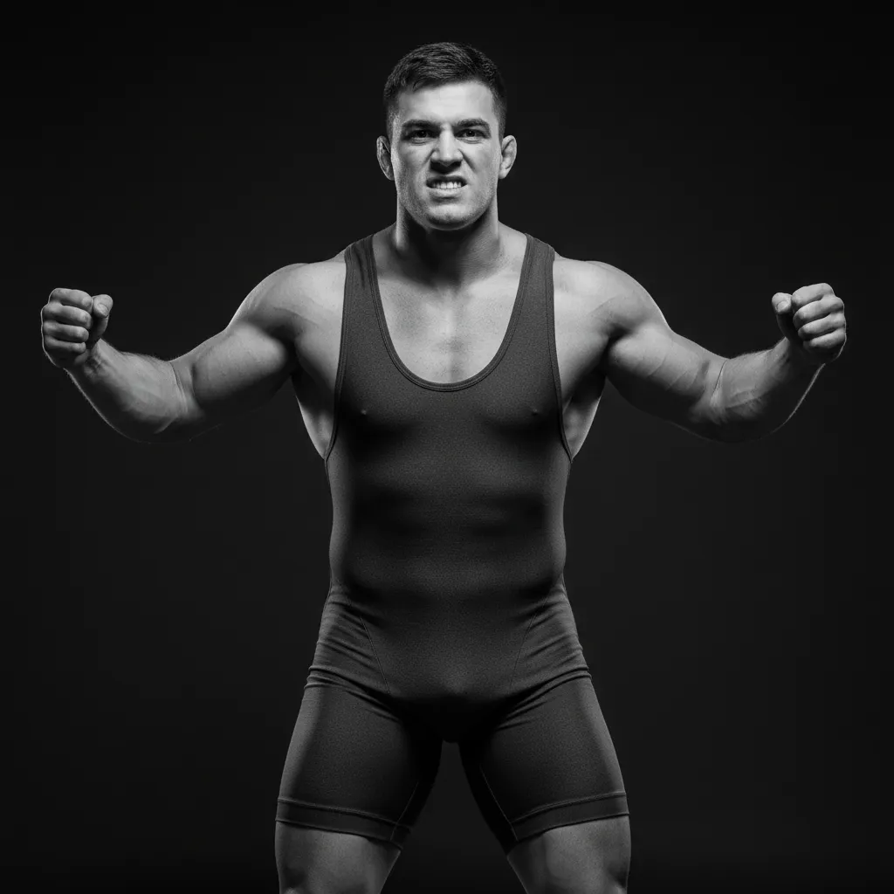
Unitard от ключиц до середины бедра — принципиально другой крой, не singlet. Единый антрацитовый цвет без зон, переходов и акцентных полос. Вся поверхность — одна микротекстура, напоминающая шлифованный базальт: мелкий, едва различимый рельеф, который считывается только вблизи. Издалека — непрерывная тёмная масса.
Широкие лямки 15 см формируют Y-силуэт на спине, визуально расширяя плечевой пояс на 6–8 см. Конструктивные швы утоплены в поверхность — каналы, а не рёбра. Один вертикальный тональный шов идёт от плечевого среза до бедра — виден только при натяжении ткани в движении.
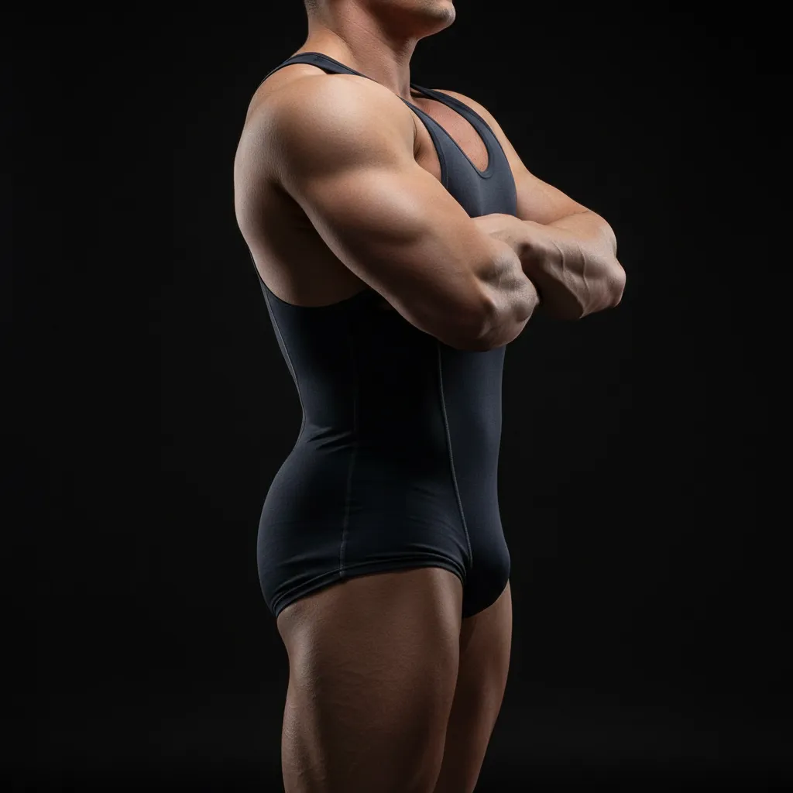
Единственный скрытый акцент — контрастная тёмно-медная подкладка внутренней стороны лямок. Не видна в стойке. Мелькает при поднятии рук — как подкладка офицерской шинели. Деталь не для зрителя, а для того, кто носит.
Основа: полиамид-эластан 80/20, 220 г/м², микротекстура «базальт». Швы: утопленные каналы, ультразвуковая сварка. Лямки: 15 см, подкладка тёмная медь. Вентиляция: перфорация в подмышечных зонах. Пах: двойная панель повышенной плотности + ластовица, визуально неотличима от основы. Вес: ~290 г.
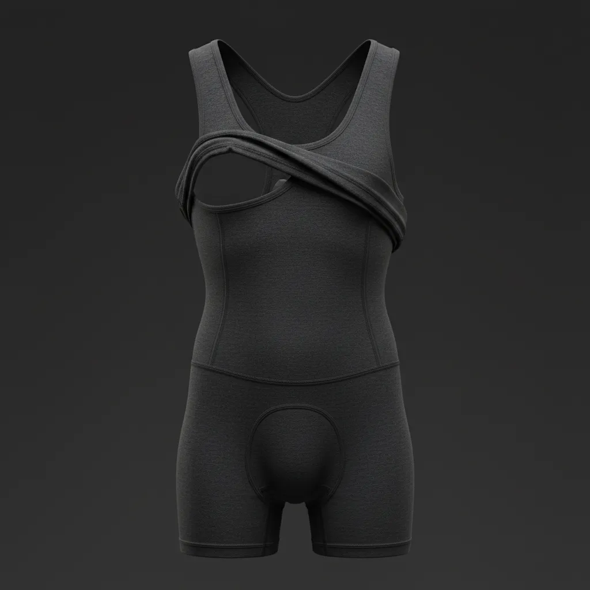
Монолит не нуждается в орнаменте — он впечатляет массой, формой и непрерывностью. Как бетонная архитектура Тадао Андо: сила в том, что нечего разглядывать — есть только ФОРМА.
Концепт II: «Берсерк»
Структурная асимметрия, построенная на одной диагонали. Тяжёлая тёмная левая сторона, лёгкая бордовая правая.
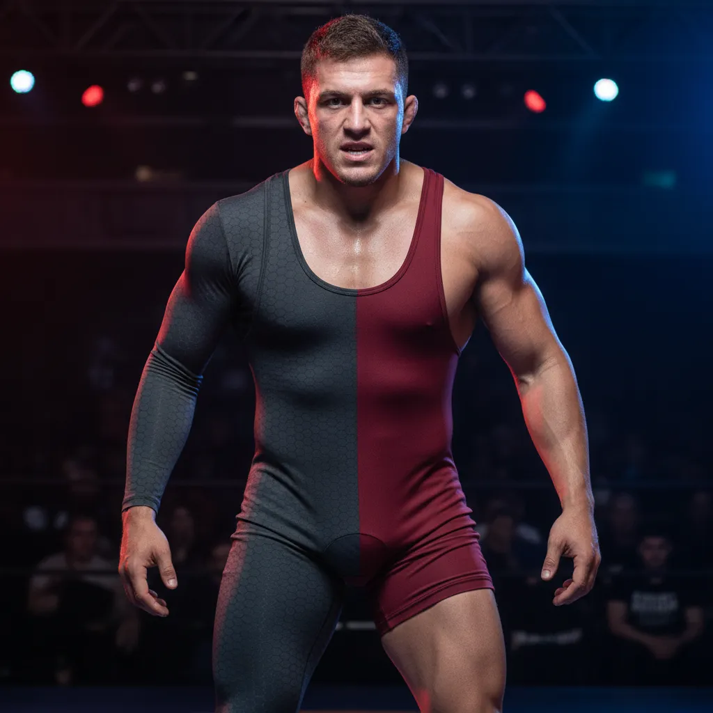
Единственный конструктивный шов идёт от левого плеча к правому бедру, разделяя форму на две зоны.
Левая сторона (броня): антрацит с гексагональной текстурой. Интегрированный рукав до бицепса. Штанина удлинённая, до колена — плотно облегающая, с той же текстурой.
Правая сторона (скорость): oxblood бордо, гладкая поверхность. Узкая плоская лямка-лента 2 см. Штанина классической борцовской длины. Mesh-вставка на рёбрах тон-в-тон — вентиляция, считываемая только вблизи.
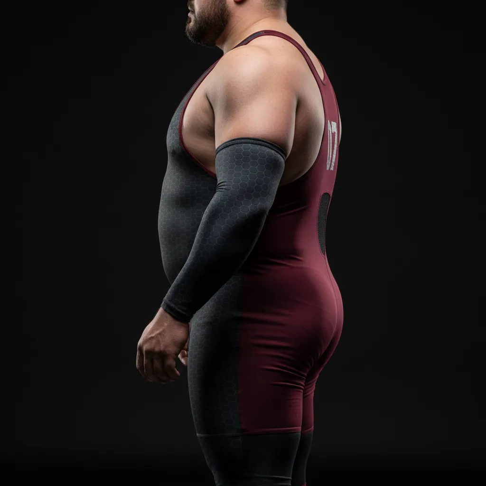
Спина — антрацитовая с продолжением гексагональной текстуры. Вертикальный номер по позвоночнику — не напечатан, а вырезан в текстуре, под ним виден подкладочный слой.
Левая сторона: полиамид-эластан, 210 г/м², прессованный гексагон. Правая: гладкий компрессионный трикотаж, 200 г/м². Шов-разлом: диагональ от плеча до бедра, 3 мм, силиконовая лента внутри. Рукав: до бицепса, односторонний. Ноги: левая до колена, правая классическая. Пах: формованная EVA-пена 3 мм + двойной слой. Вес: ~300 г.
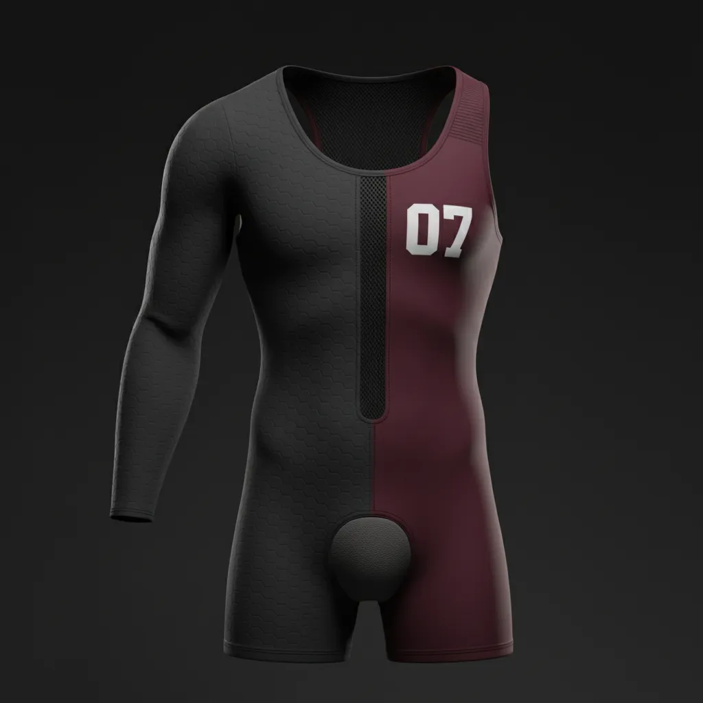
Симметрия — это порядок и предсказуемость. Берсерк — это архитектурная асимметрия: разница в длине штанин видна с любой трибуны. Не орнамент, а тектоника. Берсерк стал тише, но опаснее.
Концепт III: «Sovereign»
Портновский крой. Форма, скроенная как bespoke suit — каждый шов имеет причину существовать.
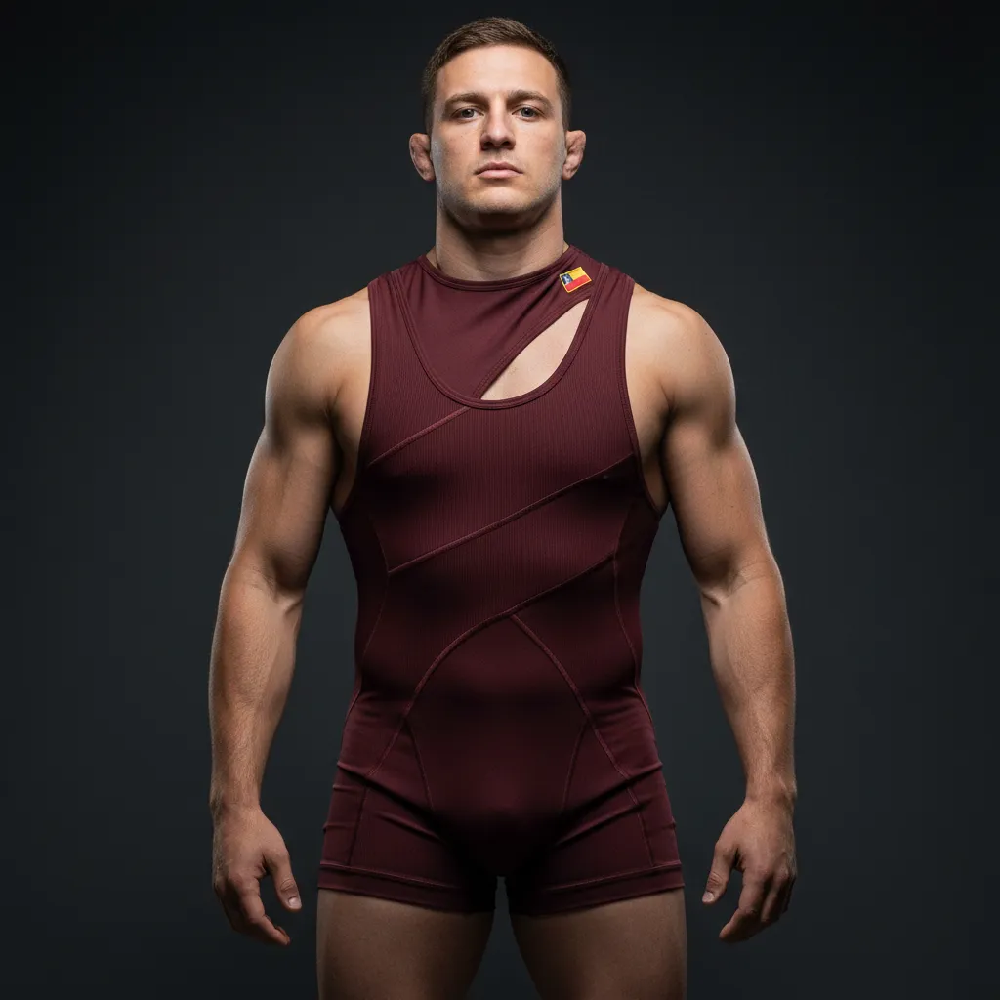
Основная ткань — cavalry twill knit с диагональной текстурой, вызывающей ассоциации с военной формой и верховой ездой. Не глянцевый спандекс — матовая, благородная поверхность, которая говорит «это дорого» на подсознательном уровне.
Контролируемая асимметрия горловины: одна сторона поднята до основания шеи, другая срезана по дельте — разница в 4–5 см, как асимметричный лацкан. Тоньше, чем «голое плечо» Берсерка — Sovereign намекает, а не кричит.
Центральная overlay-планка из ottoman rib идёт от ключицы до пояса, создавая третий слой и визуальную глубину. Рельефные bonded seams шириной 3–4 мм приподняты над поверхностью — тактильная архитектура тела.
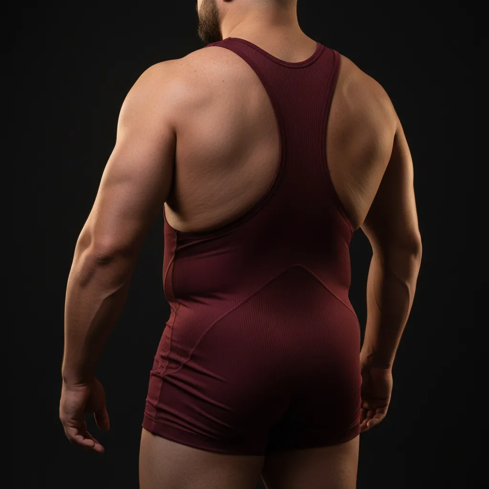
Основа: cavalry twill knit, диагональная текстура, 200 г/м². Overlay: ottoman rib планка 12–15 см. Канты: bonded seams 3–4 мм, рельефные. Асимметрия: горловина +4–5 см с одной стороны. Горловина: кант 8 мм с силиконовым грипом. Пах: modesty panel с вытачкой, рельефные швы по бокам отводят взгляд. Вес: ~280 г.
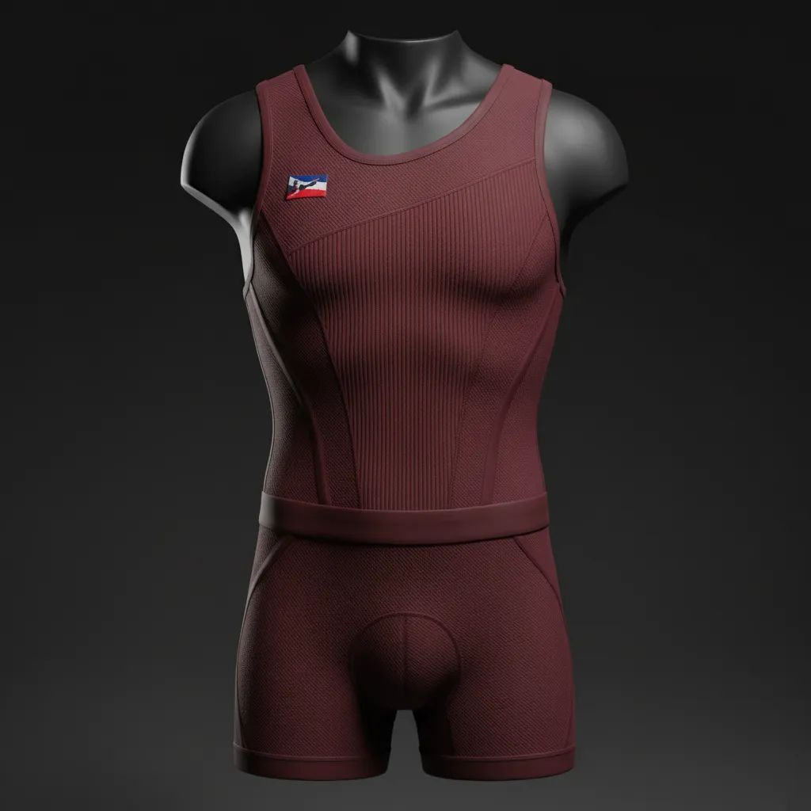
Sovereign не кричит о себе — он скроен. Как безупречно сидящий двубортный костюм заставляет окружающих инстинктивно воспринимать владельца как человека с властью, так и эта форма через безупречность кроя транслирует: этот атлет относится к своему спорту как к делу чести.
Концепт IV: «Stratum»
Три функциональные текстуры на одном изделии. Красота как побочный эффект безупречной инженерии.
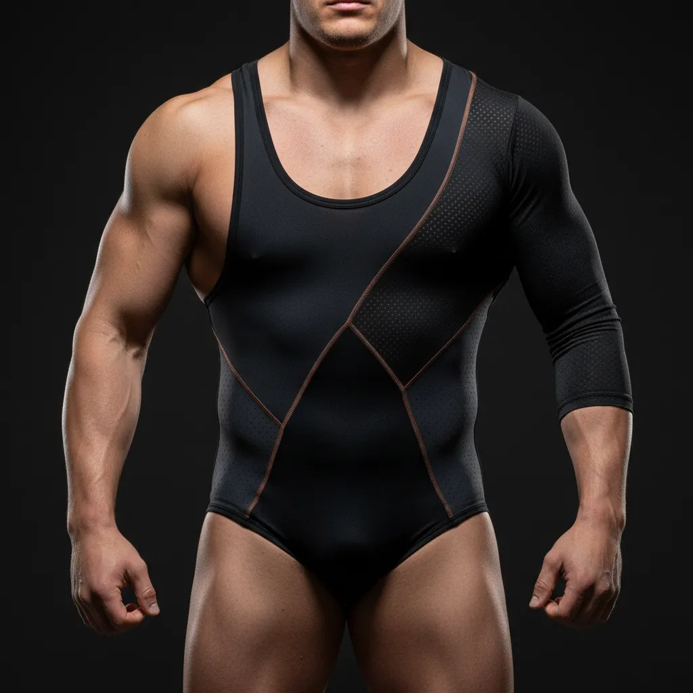
Вдохновение — интерьер McLaren или Porsche: ты видишь алькантару рядом с карбоном, перфорацию рядом с матовой кожей — и понимаешь, что каждый материал на своём месте.
Центральная панель — матовая shark-skin ткань, поглощающая свет. Бока — лазерная микроперфорация с графитовым подкладом, обеспечивающая вентиляцию и тихую глубину тона. Расширенная правая лямка-кэп покрывает дельту — micro-grip dot-matrix текстура для контролируемого сцепления в зонах захвата.
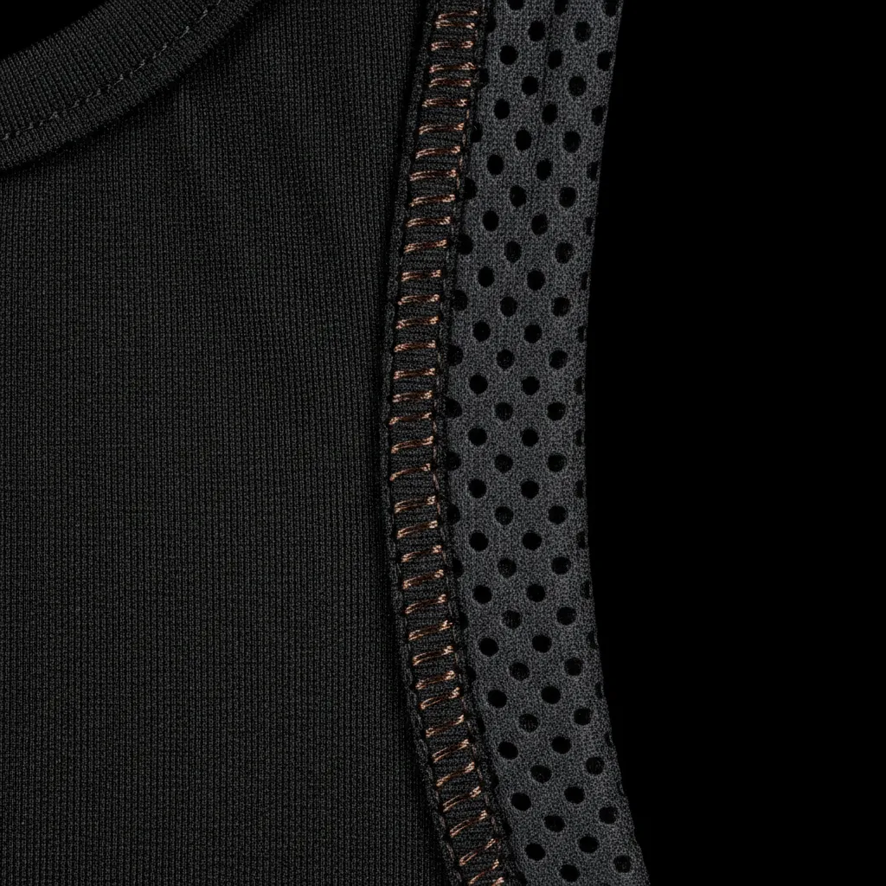
Диагональный рельефный шов (stratum line) идёт от правого плеча к левому бедру, разделяя текстурные зоны — геологическая метафора. Контрастная строчка тёмной бронзы — единственный цветовой акцент на всём изделии.
Центр: shark-skin, 220 г/м², полное поглощение света. Бока: лазерная перфорация, подклад графит. Кэп + бёдра: dot-matrix micro-grip 0,3 мм. Stratum line: рельефный шов + медная строчка. Лямки: асимметрия (5 см / 10 см кэп). Пах: встроенный бриф + EVA 3 мм, съёмный. Вес: ~280 г.
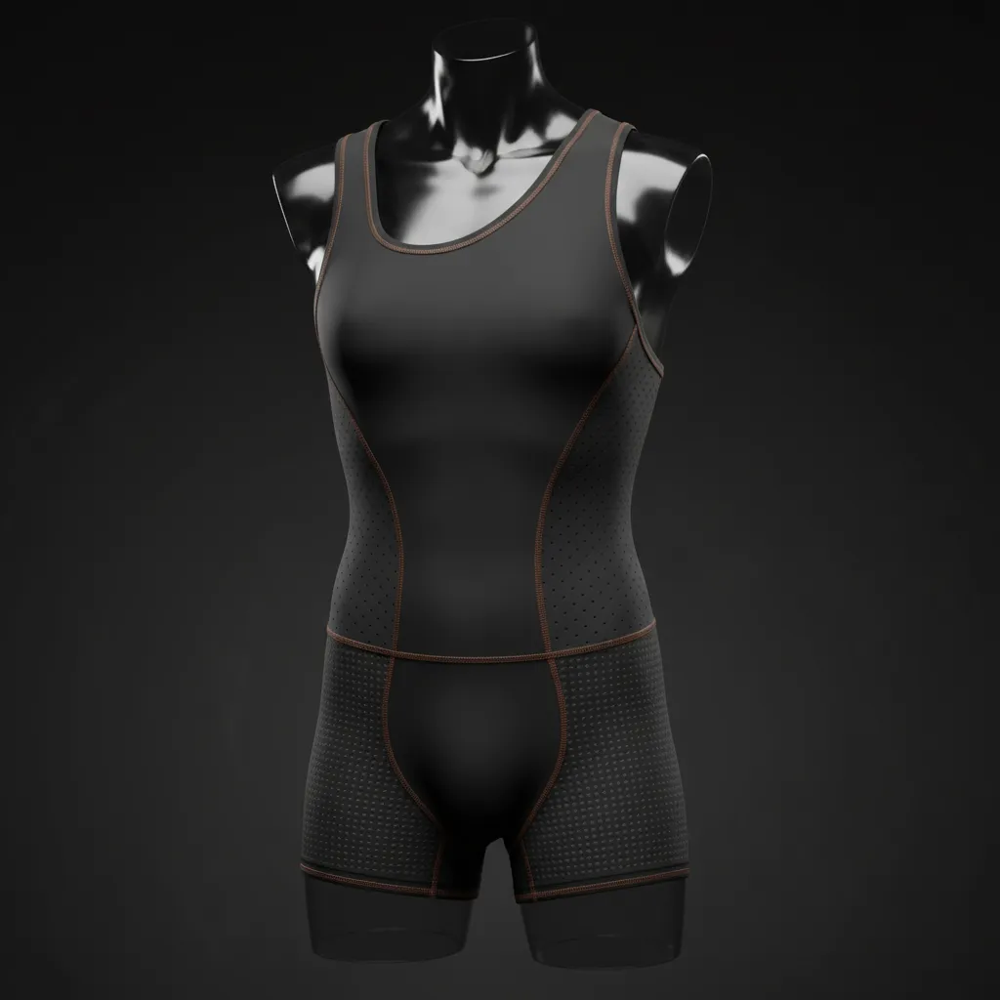
Силуэт считывается с 20 метров: асимметрия плеч + диагональ разлома. Текстуры — с 2 метров. Детали — только в руках. Три масштаба восприятия.
Концепт V: «Кодекс»
Структурная форма с диагональной архитектурой. ДНК боевых искусств, вшитая в современный крой.
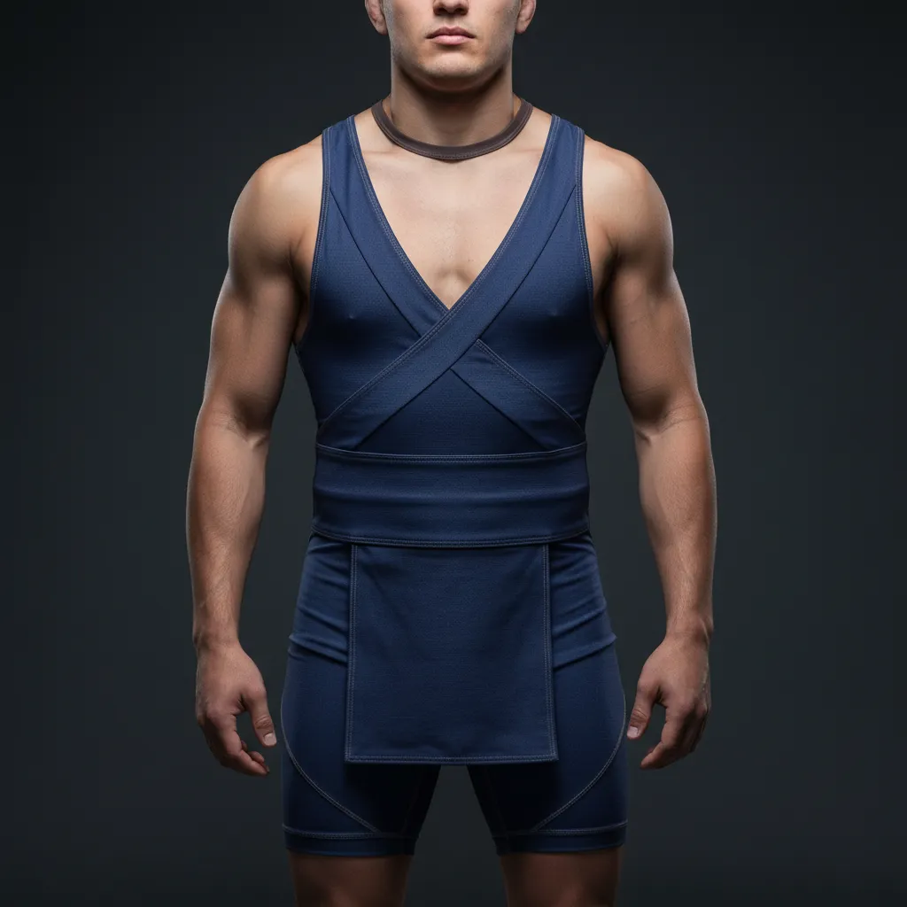
Главный элемент — две плоские панели, пересекающиеся на груди по диагонали 25–30°, начинаясь на 3 см ниже ключицы и сходясь на уровне солнечного сплетения. Это не функциональный запах кимоно — панели вшиты, создавая структурный рельеф без риска раскрытия.
Ткань — матовый микрополиэстер с микро-оксфордским плетением: визуально «тканый», как поверхность дзюдоги, но гладкий на ощупь. Бондированный край горловины 2 см с тональным контрастом. Зона пояса — 5 см полоса повышенной плотности, визуальный «оби», создающий горизонталь, контрастирующую с диагональю запаха.
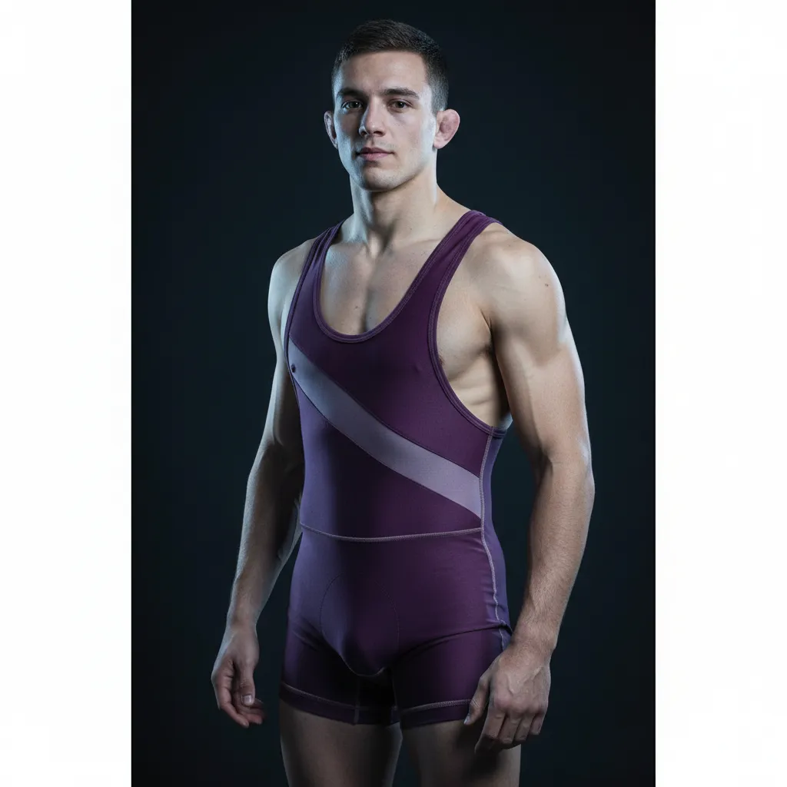
Два колорвея: глубокий индиго и глубокий сливовый (мурасаки — цвет высшего ранга в Японии). Спина полностью чистая — единственный элемент на ней — тональное тиснение, видимое только при определённом угле света.
Ткань: микро-оксфордский трикотаж, 200 г/м², матовый. Запах: две панели, угол 25–30°, фиксированные. Горловина: бондированный край 2 см. Пояс: зона повышенной плотности 5 см. Пах: компрессионный бандаж + ластовица-ромб + фронтальная панель-передник (продолжение запаха). Шорты: 18 см inseam, диагональные линии. Вес: ~290 г.
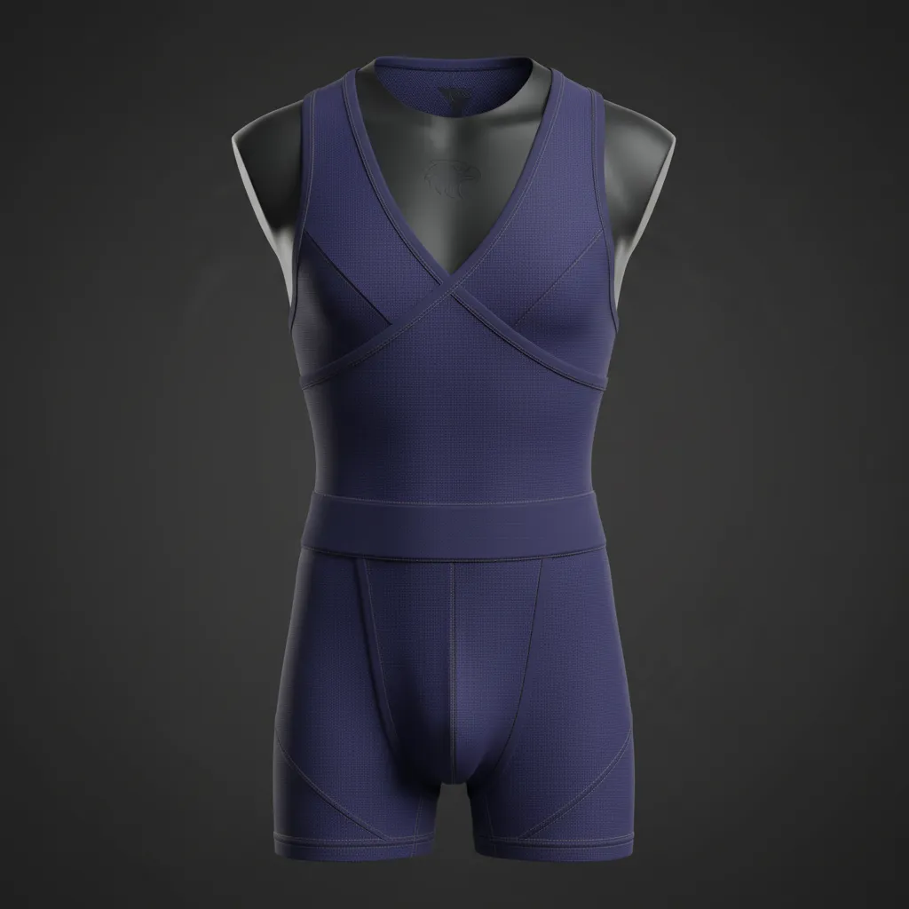
Когда борец выходит на ковёр в этой форме, он выглядит не как спортсмен в трико, а как человек, одетый в регалию. Единственная диагональная линия на торсе делает то же, что пояс в дзюдо: говорит «эта одежда надета с намерением».
Концепт VI: «Кокон»
Панельная архитектура тела. Не мягкость — саркофаг метаморфозы.
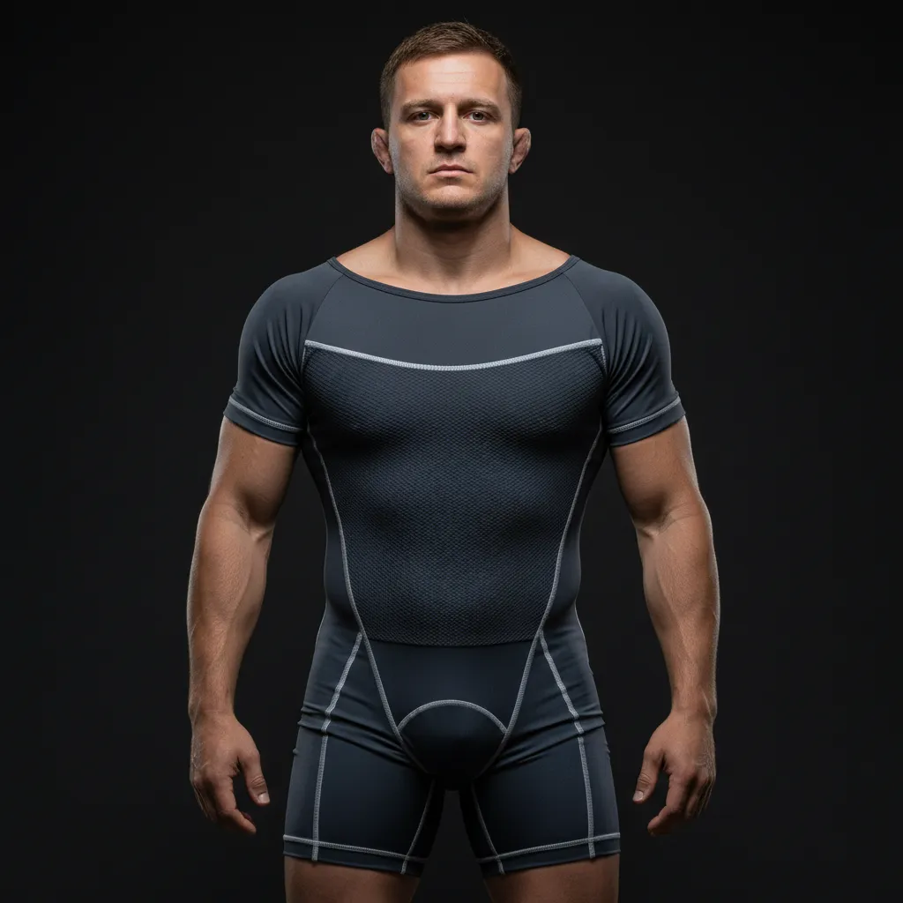
10-панельная конструкция из трёх зон плотности. Центральная панель торса — плотный матовый пикейный трикотаж (280 г/м²), визуально читающийся как нагрудная пластина: другая текстура, другой рельеф, другое поведение света. Боковые панели — средний трикотаж с микроперфорацией.
Кимоно-крой: плечевой шов отсутствует, линия плеча продлена до середины дельты единым полотном — это расширяет плечи без подплечников и создаёт силуэт, которого нет ни у одного другого концепта.
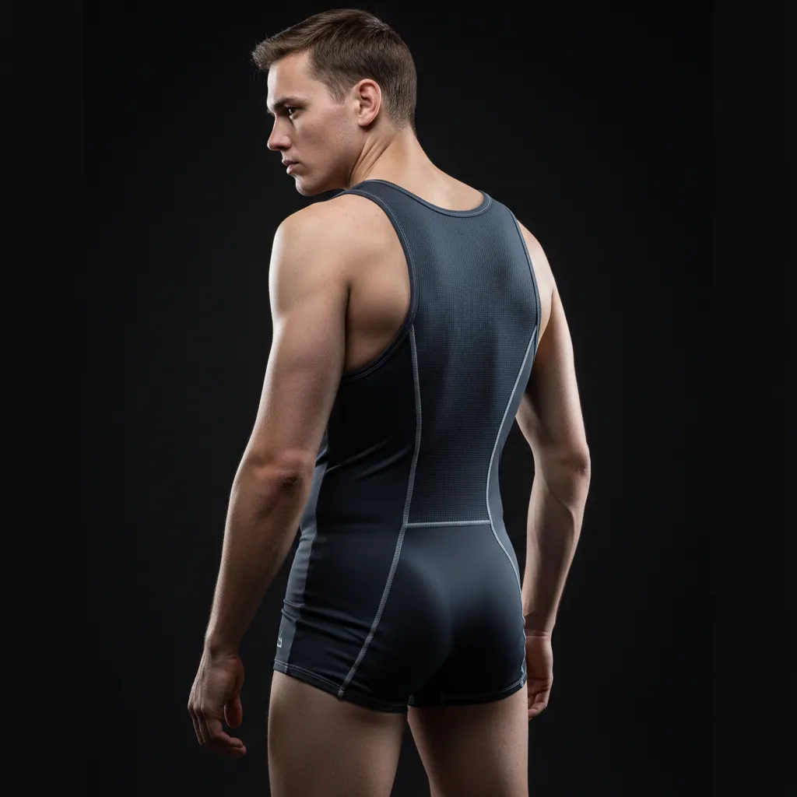
Цвет — глубокий графит. Серебристо-серые плоские швы прочитываются как технический чертёж на поверхности тела. Вырез — усиленная лодочка с планкой 1,5 см. Штанины с диагональным срезом: спереди на 2 см выше колена, сзади на 4 см — лёгкая диагональ убирает ассоциацию с велошортами и визуально удлиняет ногу.
Панели: 10 штук, 3 зоны плотности. Торс: пикейный трикотаж, 280 г/м². Бока: 220 г/м², микроперфорация. Плечо: кимоно-крой, без плечевого шва. Горловина: лодочка + планка 1,5 см. Ноги: диагональный срез (2/4 см). Швы: серебристо-серые, flatlock. Пах: компрессионный гамак + панель 320 г/м² + вытачка-складка. Вес: ~310 г.
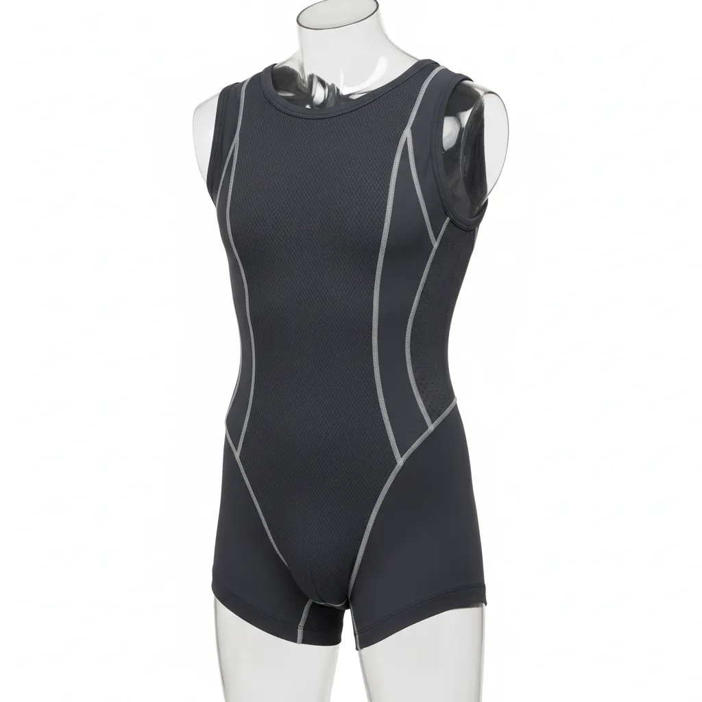
Кокон — не мягкость. Это саркофаг метаморфозы: жёсткая оболочка, внутри которой тело перестраивается в боевую форму.
Что дальше
Шесть концептов — шесть разных механизмов. Монолит давит непрерывной массой. Берсерк ломает симметрию. Sovereign скроен как bespoke suit. Stratum инженерит текстурами. Кодекс цитирует традицию через геометрию. Кокон строит архитектуру из панелей.
Все шесть соблюдают правила UWW. Все шесть решают проблему паха. Все шесть делают одно: превращают экипировку из помехи в инструмент.
Каждый концепт прошёл через спор дизайнера и критика. Критик убивал кринж, дизайнер защищал идею. В результате — ни один концепт не выглядит как костюм для косплея. Каждый — форма, которую реальный спортсмен мог бы надеть на чемпионат мира и чувствовать гордость.
В 2017 году борцовское сообщество уже признало: singlet — проблема. Дверь открыта. Вопрос — кто войдёт первым.
Борцы — одни из самых физически совершенных атлетов на планете. Их форма должна это показывать. Не полосками на трико. Не логотипом спонсора. А так, чтобы зритель сказал не «что он на себя надел», а — «я бы не хотел оказаться на ковре с этим человеком».
Источники и ссылки
- United World Wrestling (UWW) — официальные правила экипировки, январь 2025
- NFHS — альтернативная форма, правила 2017
- NCAA Wrestling Rules — изменения формы 2019
- Древнегреческие Олимпийские игры — борьба с 708 до н.э.
- NFHSA: снижение числа борцов в школах на 7,9% (2011–2016)
- Adam, H. & Galinsky, A.D. (2012). «Enclothed cognition» — J. of Experimental Social Psychology, Vol. 48, Issue 4
- Cavalry twill — текстильная традиция британской военной формы, XIX в.
- Micro-oxford weave — адаптация оксфордского плетения для компрессионного трикотажа
- Piqué knit — технология Lacoste, адаптированная для спортивной компрессии